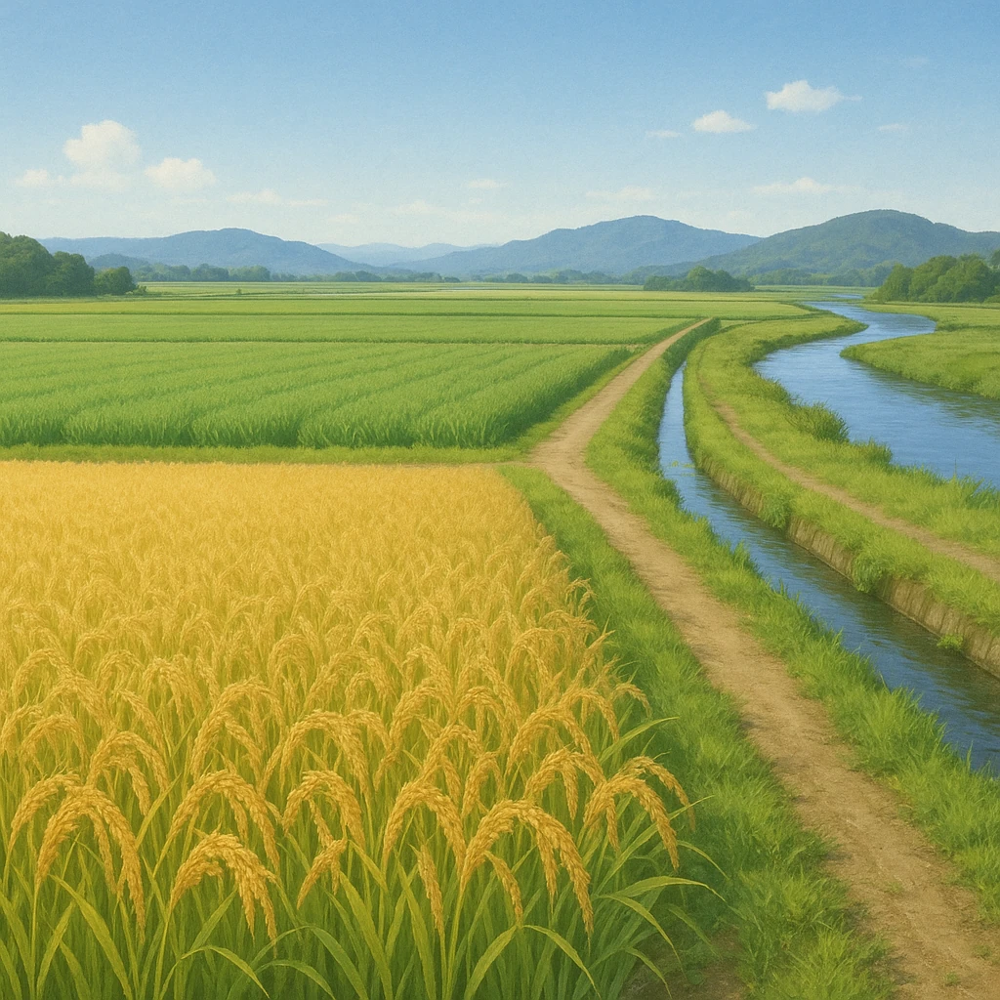

ノート2
農業①
福岡県・佐賀県
筑紫平野
九州一の
穀倉地帯
。
筑後川が運んだ土でできた広い平野。

同じ田で、1年に2種類つくる
米（夏）
小麦（冬）
春
夏
秋
冬
米のあとに小麦＝「裏作」
①
九州一の穀倉地帯で
稲作
が盛ん
＝米づくり。筑後川の水と広い低地を生かす
②
裏作として小麦などを栽培する
二毛作
を行う
同じ耕地で1年に2種類の作物をつくること
まちがえない
①
＝ちがう作物を年2回。
二期作
＝同じ作物（米）を年2回。
筑紫平野は
①
のほう！
第13章 九州地方
SEED EDUCATION